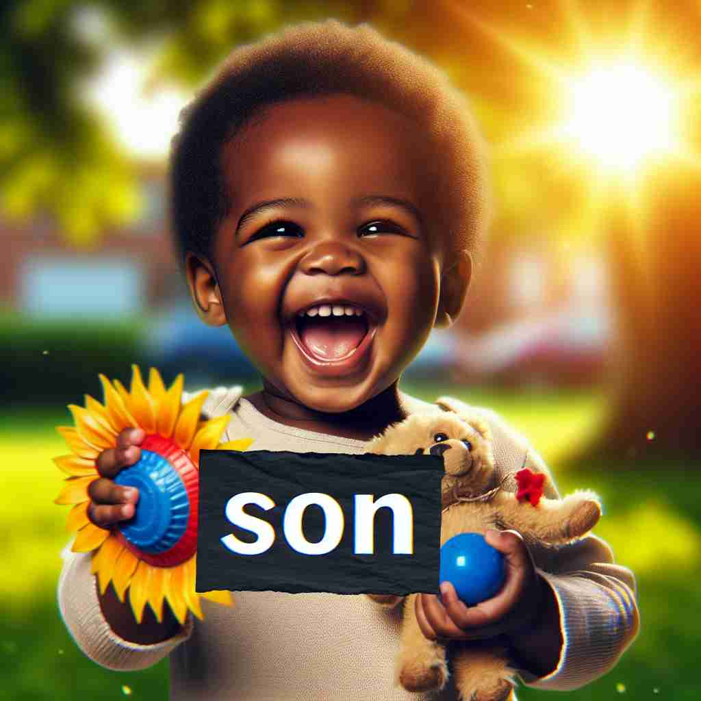

💬 The father smiles at his son's graduation.

💬 My son loves fishing with me at the lake.
💬 The mother is happy to have a newborn son.

💬 This is my son holding a sunflower.
🔈 [sʌn]
🗝️ n. a male child in relation to his parents
🖼️ 在一个温馨的客厅里，父母亲望着玩具堆中的小男孩，他笑着搭建积木。他们彼此微笑并交换了自豪的眼神，这个场景展示了'son'作为他们的孩子的核心含义。
🔍 想象'son'是一棵家族树上的一个节点。从最基本的父母-儿子关系出发，这个概念可以延伸到更广泛的家族关系、国家、组织，甚至地理位置。通过将各种关系比作父子关系，我们可以更容易理解和记忆'son'的多重含义。
💬 The father smiles at his son's graduation.
💬 My son loves fishing with me at the lake.
💬 The mother is happy to have a newborn son.
💬 This is my son holding a sunflower.
🌳 词根 'son' 源自拉丁语，意为 '声音'。在现代英语中，它通常与 '儿子' 相关。
💡 可以将 'son' 联想为 'sun'（太阳），象征着太阳一般传播光和声音，同时考虑到 'son' 是家庭的一员，能帮助记忆其作为名词 '儿子' 的含义。
🗝️ n. a male descendant
🖼️ 在一个家族聚会上，一位年长者满脸欣慰地看着坐在身边的年轻人，轻轻地拍了拍他的肩膀，称赞他是家族的'son'，象征着家族的延续和希望。
💬 He is a son of the Zhang family.
❓ 扩展至更广泛的家族关系
🗝️ n. a man in relation to his country or organization
🖼️ 在一个庄严的仪式上，一位男士身着制服，庄重地向国旗致敬。他被称为国家的'son'，体现他对国家的忠诚与服务。
💬 He is a true son of China.
❓ 比喻性地将国家或组织视为父母
🗝️ n. a male person considered in relation to his native place
🖼️ 在小镇的庆典上，人们围绕着一位刚获得全国性奖项的年轻人，他们欢呼着：“这是我们镇的'son'！” 这个场景展示了他与故土间的特殊联系。
💬 Shakespeare was a son of Stratford-upon-Avon.
❓ 将出生地比作父母
🗝️ n. a familiar form of address for a young man
🖼️ 在一个繁忙的车站，一位长者安慰地拍着一位年轻人的肩膀，微笑着说道：“放松，son，一切都会好起来的。”展现了'对于一位年轻人的亲昵称呼。
💬 Come here, son, let me help you.
❓ 将被称呼者视为说话者的儿子